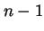
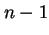
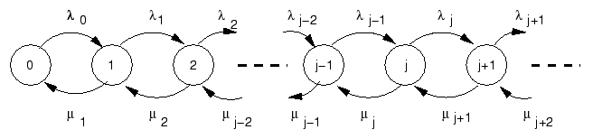
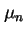
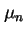

Next: ทฤษฎีความน่าจะเป็นคงตัวของสถานะ
Up: กระบวนการเกิด-ดับ และระบบคิว
Previous: กล่าวนำ
Contents
Index
กระบวนการเกิด-ดับ
จากที่กล่าวมาในบทที่แล้ว กระบวนการเกิด-ดับเป็นประโยชน์มากในการจำลองระบบ ที่มีงานเข้าใช้ระบบครั้งละหนึ่งงาน สถานะของกระบวนงานแสดงโดยจำนวนงาน  ที่อยู่ในระบบ งานใหม่ที่เข้ามาในระบบจะเปลี่ยนสถานะเป็นสถานะ
ที่อยู่ในระบบ งานใหม่ที่เข้ามาในระบบจะเปลี่ยนสถานะเป็นสถานะ  ซึ่งเรียกว่า ``เกิด'' (Birth)
เช่นเดียวกัน ถ้างานเสร็จจากระบบและออกจากระบบ จะทำให้กระบวนงานเปลี่ยนมาอยู่ที่สถานะ  ซึ่งเรียกว่า ``ดับ'' (Death) ดังนั้นจำนวนงานในระบบของคิวลักษณะดังกล่าวสามารถจำลองได้ โดยกระบวนการเกิด-ดับ
ในบทนี้จะแสดงการพิสูจน์ความน่าจะเป็นประจำสถานะของกระบวนการเกิด-ดับ ที่สามารถใช้ได้ในกรณีทั่วไป และผลที่ได้จะสามารถนำไปวิเคราะห์ระบบคิว
ซึ่งเรียกว่า ``เกิด'' (Birth)
เช่นเดียวกัน ถ้างานเสร็จจากระบบและออกจากระบบ จะทำให้กระบวนงานเปลี่ยนมาอยู่ที่สถานะ  ซึ่งเรียกว่า ``ดับ'' (Death) ดังนั้นจำนวนงานในระบบของคิวลักษณะดังกล่าวสามารถจำลองได้ โดยกระบวนการเกิด-ดับ
ในบทนี้จะแสดงการพิสูจน์ความน่าจะเป็นประจำสถานะของกระบวนการเกิด-ดับ ที่สามารถใช้ได้ในกรณีทั่วไป และผลที่ได้จะสามารถนำไปวิเคราะห์ระบบคิว  ได้
แผนภาพแสดงการเปลี่ยนสถานะของกระบวนการเกิด-ดับเมื่อระบบอยู่ในสถานะ มีงานอยู่ในระบบเท่ากับ งาน แสดงในรูป 4.1
ได้
แผนภาพแสดงการเปลี่ยนสถานะของกระบวนการเกิด-ดับเมื่อระบบอยู่ในสถานะ มีงานอยู่ในระบบเท่ากับ งาน แสดงในรูป 4.1
Figure 4.1:
แผนภาพแสดงการเปลี่ยนสถานะของกระบวนการเกิด-ดับ
|

|
งานเข้ามาในระบบด้วยอัตรา  โดยที่มีอัตราการบริการเท่ากับ  สมมุติให้ทั้งอัตราการเข้าใช้บริการ และอัตราการบริการมีการกระจายแบบ Exponential ความน่าจะเป็นคงตัวของสถานะ (Steady-State Probability)
ในกระบวนการเกิด-ดับ ในสถานะ สามารถหาได้จากทฤษฎี
4.1
โดยที่มีอัตราการบริการเท่ากับ  สมมุติให้ทั้งอัตราการเข้าใช้บริการ และอัตราการบริการมีการกระจายแบบ Exponential ความน่าจะเป็นคงตัวของสถานะ (Steady-State Probability)
ในกระบวนการเกิด-ดับ ในสถานะ สามารถหาได้จากทฤษฎี
4.1
Vara Varavithya
2002-03-09